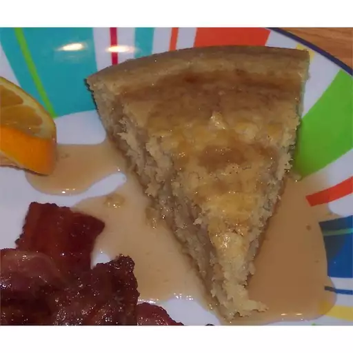

Baked Pancake Squares Recipe

Description
These squares combine the taste of pancakes with the texture of pound cake.
Serve with maple syrup, honey, or jam. Add mini-chocolate chips for a special treat!
Ingredients
- 3/4 cup milk
- 2 tablespoons butter, melted
- 1/4 cup egg substitute
- 1 tablespoon white sugar
- 2 teaspoons baking powder
- 1/4 teaspoon salt
Steps
- Preheat oven to 350 degrees F (175 degrees C).
Lightly grease an 8x8 inch baking dish.
- In a large mixing bowl, beat together milk, butter and egg substitute. Add the sugar, then gradually beat the flour in.
Carefully stir in the baking powder and salt. Pour batter into prepared pan.
- Bake in preheated oven for 30 minutes. Cut into 16 square servings.